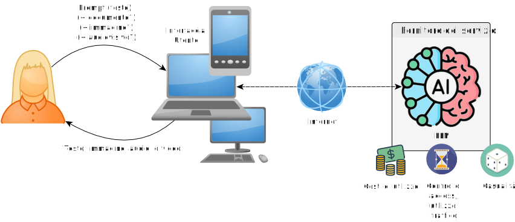
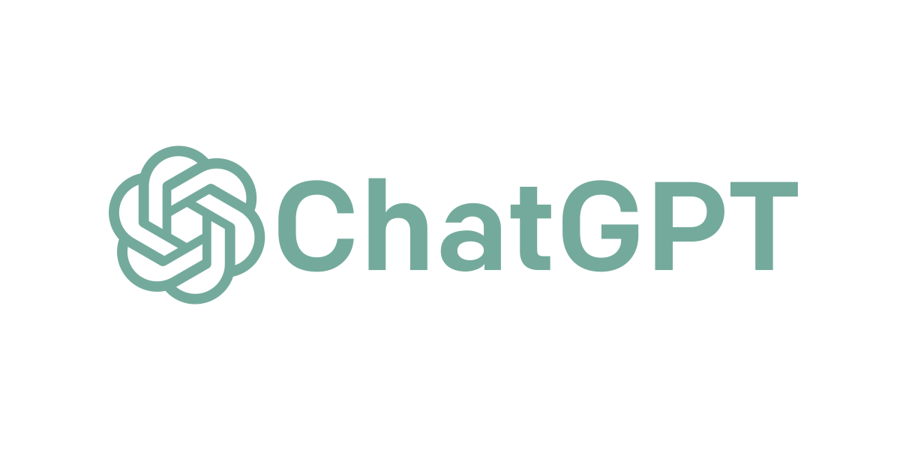
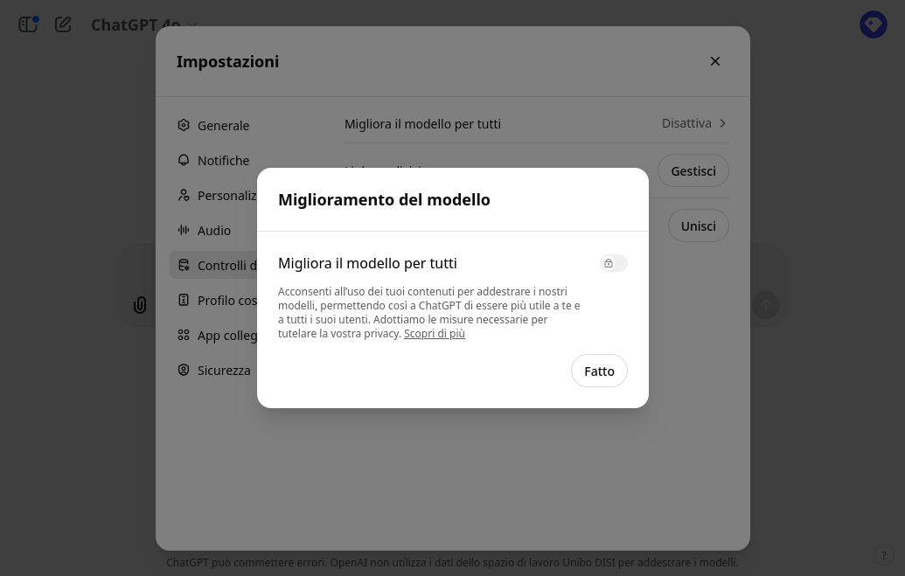
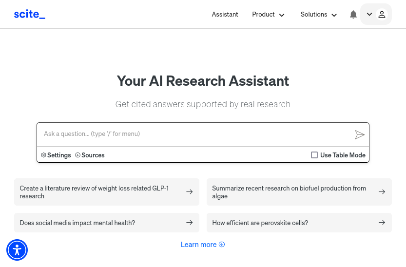
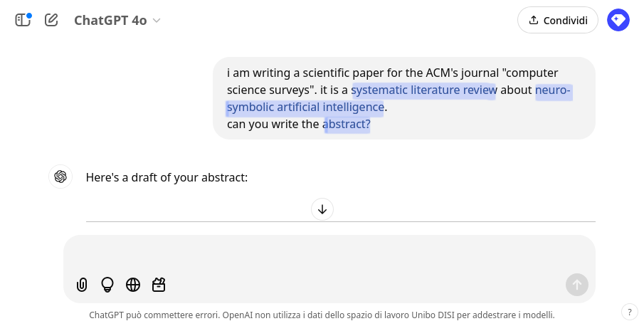
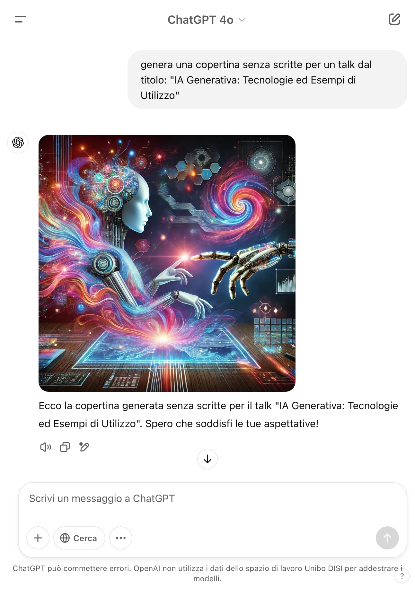

IA Generativa: Tecnologie ed Esempi di Utilizzo
Giovanni Ciatto, Dipartimento di Informatica — Scienza e Ingegneria (DISI), Sede di Cesena,
Alma Mater Studiorum—Università di Bologna

(versione presentazione: 2025-02-03)
Link a queste slide
https://gciatto.github.io/talk-genai-unibo/

Scaletta
GenAI: Intelligenza Artificiale Generativa
Algoritmi di IA in grado di generare automaticamente contenuti, e.g.:
- testo
- immagini
- audio e/o video
- codice [di programmazione]
- …
GenAI mediante Modelli Fondazionali (FM)
- Grosse reti neurali che imparano ad elaborare, “capire”, e produrre dati non [necessariamente] strutturati
- allenati su grandi quantità di dati, e con grandi risorse computazionali, a fare un po’ tutto
- con l’idea di poterli poi specializzare per compiti specifici

Modelli Fondazionali vs. Large Language Models

GenAI con modello di consumo as-a-Service

Ciclo di apprendimento di GenAI

Alcune soluzioni tecnologiche permettono di scegliere (pt. 1)

Alcune soluzioni tecnologiche permettono di scegliere (pt. 2)

Alcune soluzioni tecnologiche permettono di scegliere (pt. 3)

Alcune soluzioni tecnologiche permettono di scegliere (pt. 4)

Principali soluzioni tecnologiche
Categorizzate per tipo di interfaccia
- Conversazionali: e.g. ChatGPT, Claude, Scite
- Auto-completamento: e.g. GitHub Copilot
- Programmatiche: e.g. OpenAI Platform, Hugging Face
- In-App: e.g. Microsoft 365 Copilot
- Editing di audio-visivi: e.g. Suno, Runway
Lista non esaustiva!
Interfaccia conversazionale

- Interazione testuale che mima una corrispondenza (chat)
- l’utente chiede, l’IA risponde reattivamente
- L’interfaccia permette l’inserimento di un prompt
- opzionalmente contenente allegati (e.g. immagini, documenti)
- Le risposte sono contestuali
- i.e., lo storico della conversazione impatta le risposte future
- La risposta contiene testo (spesso formattato)
- opzionalmente: immagini, URL, codice
Talvolta…
- … prima di rispondere, l’IA fa una ricerca su Web
- importante per avere risultati aggiornati
Interfaccia basata su auto-completamento

- L’IA suggerisce un completamento per il testo inserito
- e.g., codice, testo, URL
- L’utente accetta (anche in parte) o ignora il suggerimento
- Usato anche e soprattutto per codice di programmazione
Attenzione…
- … modello di costo ad abbonamento (vedi qui)
- … potenziali leak di informazioni sensibili
- … rischio di lock-in non trascurabile
Interfaccia programmatica
import asyncio
from openai import AsyncOpenAI
client = AsyncOpenAI(api_key="sk-1234567890abcdef1234567890abcdef")
async def main():
stream = await client.chat.completions.create(
model="gpt-4",
messages=[
dict(role="user",
content="European countries, one by line")
],
stream=True,
)
async for chunk in stream:
print(chunk.choices[0].delta.content or "", end=", ")
asyncio.run(main())
Output:
Albania, Andorra, Austria, Belarus, Belgium, Bosnia and Herzegovina, Bulgaria, Croatia, Cyprus, Czech Republic, Denmark, Estonia, Finland, France, Germany, Greece, Hungary, Iceland, Ireland, Italy, Kosovo, Latvia, Liechtenstein, Lithuania, Luxembourg, Malta, Moldova, Monaco, Montenegro, Netherlands, North Macedonia, Norway, Poland, Portugal, Romania, Russia, San Marino, Serbia, Slovakia, Slovenia, Spain, Sweden, Switzerland, Turkey, Ukraine, United Kingdom, Vatican City (Holy See),
-
Linguaggio di programmazione che interagisce con IA
- e.g., Python, JavaScript
-
L’interazione rimane di tipo richiesta-risposta
- il programma invia una richiesta, l’IA risponde
Abilitante per
-
Prompt parametrici, risposte processate automaticamente
- es.
list of LOCALITIES in AREA, one by line- dove
LOCALITIES$\in$ {cities,regions,states} - e
AREA$\in$ {Europe,Asia,Africa,America,Oceania} - risultati ordinati alfabeticamente
- dove
- es.
-
Scrittura software che usa l’IA come servizio
- utile in industria come in ricerca
Attenzione…
- … modello di costo a consumo (vedi qui)
- proporzionale al numero di token processati
- prezzi variabili per modello
Interfaccia in-app

-
GenAI integrata in applicazioni desktop o web
- e.g., Microsoft Office (Word, Excel, Outlook)
-
supporto per interfaccia conversazionale interna
- conversazione intrinsecamente contestualizzata
-
IA automatizza operazioni complesse (interne all’app)
- e.g., scrittura di bozze
- e.g., generazione di formule, grafici
Attenzione…
- … modello di costo ad abbonamento (vedi qui)
- … potenziali leak di informazioni sensibili
- … rischio di lock-in non trascurabile
Interfaccia per editing di audio-visivi (e.g. musica)
-
Interazione one-shot per generare il contenuto
- input: descrizione testuale del contenuto
- output: contenuto
-
L’interfaccia permette poi
- riproduzione del contenuto
- modifica del contenuto
- e.g., taglio di parti, modifica di tonalità
Esempio
Principali modalità d’utilizzo
Categorizzate per ruolo di GenAI
GenAI come…
- … motore di ricerca: uso GenAI per ricercare informazioni
- … assistente di (ri)scrittura: uso GenAI per (ri)scrivere documenti
- … assistente di lettura: uso GenAI per acquisire informazioni da documenti
- … assistende per l’elaborazione dei dati: uso GenAI per elaborare dati
- … generatore di contenuti: uso GenAI per creare contenuti
Lista non esaustiva!
GenAI come motore di ricerca
Disclaimer
GenAI non è un motore di ricerca come Google, Bing, DuckDuckGo, etc.
-
FM, di base, non accedono al Web (né interrogano qualche sorgente) prima di rispondere
- alcune tecnologie specifiche possono farlo, ma non c’è garanzia
-
FM, di base, rispondono in base a dati e conoscenze acquisite durante l’allenamento
- informazioni successive all’ultimo ciclo di apprendimento potrebbero non essere considerate
-
FM possono essere immaginati come grandi memorie
- in cui (porzioni de) lo scibile umano è stato “registrato”
- interrogabili tramite il linguaggio naturale
-
Le risposte di GenAI non vanno mai accettate acriticamente, in quanto suscettibili di allucinazioni:
- errori: informazioni fattualmente false o inventate, riportate con sicumera
- fraitendimenti: informazioni fuori contesto o non pertinenti rispetto all’aspettativa dell’utente
- bias: di campionamento delle informazioni, di selezione del motore di ricerca, intrinseci nel linguaggio, etc.
GenAI come motore di ricerca
Razionale
Possiamo considerare FM come esperti su tematiche che:
- siano temporalmente consolidate $\implies$ diffidare di risposte su temi recenti
- siano relativamente popolari $\implies$ diffidare di risposte su temi di nicchia
GenAI come motore di ricerca
Consigli sempre validi
-
verificare le fonti menzionate da GenAI
- esistono davvero? sono aggiornate?
-
verificare l’aderenza alle fonti
- la fonte dice davvero quello che GenAI ha riportato?
-
prediligere, se possibile, la lingua inglese
- LLM sono stati sicuramente esposti a più testi inglesi che italiani durante l’allenamento
Esempio: esplorazione sull’argomento “Sistemi multi-agente”, con ChatGPT
Un sistema multi-agente (MAS) è un tipo di sistema composto da molteplici agenti indipendenti (ma interattivi), ciascuno capace di percepire il proprio ambiente e di intraprendere azioni. Gli agenti possono essere modelli di IA, programmi software, robot e altre entità computazionali. Molteplici agenti possono cooperare o verso un obiettivo comune che va oltre le capacità dei singoli agenti, con una maggiore adattabilità e robustezza.
(cf. https://www.gartner.com/en/information-technology/glossary/multiagent-systems)
Link alla conversazione completa
https://chatgpt.com/share/e/679a41e7-e164-8004-8f01-d135dde3892c

- Definizione corretta
- Caratteristiche corrette
- Le applicazioni menzionate sono corrette
- Nessuna garanzia di esaustività
- bias di campionamento?
- Nessuna garanzia di esaustività
- Nessun riferimento per AlphaStar
- Interserzione con altre nicchie
- blockchain, protocolli di consenso

- Gli aspetti menzionati hanno fondamenta solide
- Lista incompleta

- Tutte menzioni corrette
- Nessuna garanzia di esaustività
- bias di campionamento?

- Link ad Arxiv corretto
- Riferimento adeguato al contesto corrente
- Riferimeto mancante a paper definitivo

- Riferimento adeguato al contesto corrente
- Link ad Arxiv incoerente col riferimento
- Il paper menzionato ha un altro URL:
- Riferimeto mancante a paper definitivo

- Riferimento inadeguato al contesto corrente
- Link ad Arxiv incoerente col riferimento
- Il paper menzionato ha un altro URL:
- Riferimeto mancante a paper definitivo

- Link ad Arxiv corretto
- Riferimento adeguato al contesto corrente
- Riferimeto mancante a paper definitivo
- Link ad Arxiv corretto
- Riferimento adeguato al contesto corrente
- Riferimeto mancante a paper definitivo
GenAI come motore di ricerca (pt. 2)
Uno strumento forse migliore (ma più costoso) in ambito accademico,
potrebbe essere Scite
-
 è un database bibliografico che indicizza le citazioni nel contesto (cf. “Smart Citation Index”)
è un database bibliografico che indicizza le citazioni nel contesto (cf. “Smart Citation Index”)- citazioni classificate come supportive, mentioning, o contrasting
- fonte: “Evaluating the Accuracy of scite, a Smart Citation Index”
-
Fornisce un LLM, Scite Assistant ha accesso al database bibliografico
- interfaccia conversazionale
- riferimenti bibliografici eventualmente presenti nelle risposte vengono arricchiti con metadati
- es. link all’articolo, evidenziazione del testo citato, etc.
Interfaccia di Scite Assistant

Esempio: esplorazione sull’argomento “Sistemi multi-agente”, con Scite

- Riferimenti bibliografici con ipertesti, e metadati
- Nella parte destra, sono riportati i dettagli dei riferimenti bibliografici
- Non fa davvero riferimento alle parole chiave menzionate in precedenza
- Bias di campionamento
GenAI come assistente di (ri)scrittura
Razionale
- Interrogare GenAI per generare testo da riusare verbatim è un approccio naive
- ci si affida in toto a GenAI, col rischio che sfuggano allucinazioni
- si rischia di ereditare bias ed errori semantici senza accorgersene
- Approccio più furbo: chiedere a GenAI di rielaborare un testo grezzo o parziale
- es. una lista di cose da dire, argomenti da trattare, etc.
- controllo e responsabilità del filo del discorso rimane sull’utente
GenAI come assistente di (ri)scrittura
Consigli sempre validi
- tenere il controllo di cosa si vuole dire nel testo
- farsi assistere riguardo alla forma del testo
- rivedere il testo prodotto per errori, incongruenze, allucinazioni
- chiedere opportunamente variazioni fino a soddisfazione
Esempio: scrittura abstract di una SRL inerente “IA Neuro-Simbolica”, con ChatGPT
IA Neuro-Simbolica: la combinazione di metodi simbolici [“IA classica”, NdA] con metodi basati su reti neurali artificiali.
(cf. Neuro-symbolic artificial intelligence)
Una revisione sistematica della letteratura (SLR) è un metodo accademico indipendente che mira a identificare e valutare tutta la letteratura rilevante su un argomento al fine di trarre conclusioni sulla questione in esame. […] Viene seguito un approccio metodologico formale per ridurre le distorsioni causate da una selezione eccessivamente restrittiva della letteratura disponibile e per aumentare l’affidabilità della letteratura selezionata.
Approccio 1 (Sconsigliato): Senza traccia
(link alla conversazione completa)

- Frase generica, incontestabile, corretta
- Obietto dell’articolo
- Obiettivo generico, sempre buono per rassegna
- Contributo specifico: suggerisce struttura articolo
- Contributo generico
- Contributo specifico
- Frase di chiusura generica
Uso sostanziale di GenIA
È possibile richiedere modifiche
Approccio 2 (Consigliato): Con traccia
(link alla conversazione completa)
La traccia
- Frase d’aggancio
- Obiettivo dell’articolo
- Descrizione della metodologia
- Dichiarazione contributi
- Indicazione dell’audicence inteso
Analisi del risultato
- Frase d’aggancio
- Libera interpretazione di GenIA
- Obiettivo dell’articolo
- Descrizione della metodologia
- Dichiarazione contributi
- Indicazione dell’audicence inteso
Uso non sostanziale di GenIA
Altri tipi di supporto alla scrittura
Supporto alla traduzione automatica (pt. 1)
Meglio strumenti consolidati (e.g. Google Translate) o modelli fondazionali (e.g. GPT)?
(posto che la traduzione fatta da esperti umani sarà sempre migliore)
Altri tipi di supporto alla scrittura
Supporto alla traduzione automatica (pt. 2)
Chiediamo a Scite Assistant:
Altri tipi di supporto alla scrittura
Supporto alla traduzione automatica (pt. 3)
TL;DR: Google Translate è preferibile laddove sia richiesta precisione
Altri tipi di supporto alla scrittura
Supporto alla traduzione automatica (pt. 4)
TL;DR: GPT usabile laddove il contesto possa aiutare la traduzione
Altri tipi di supporto alla scrittura
Supporto alla traduzione automatica (pt. 5)
- Richiesta di transposizione in lingua con uno stile specifico
- Utile per migliorare la qualità scrittura in lingua
Altri tipi di supporto alla scrittura
Supporto alla generazione di codice di programmazione

(codice suggerito inefficiente, ma funzionante)
Altri tipi di supporto alla scrittura
Supporto alla documentazione del codice di programmazione

GenAI come assistente di lettura
Razionale
-
GenAI può essere usato per acquisire informazioni da documenti testuali [senza leggerli integralmente]
- e.g., estrarre highlights da un testo, sintetizzare un testo, etc.
-
La stessa idea si può applicare a contenuti multimediali
- e.g., estrarre highlights da un video, trascrivere un audio, etc.
Il testo [o contenuto] da cui estrarre informazioni deve essere fornito dall’utente
- Non presumere che GenAI conosca il testo [o contenuto] in questione
GenAI come assistente di lettura
Consigli sempre validi
-
Al crescere della lunghezza del testo, aumenta la probabilità di allucinazioni
- idem per durata dei contenuti multimediali
-
Verificiare che il testo [o contenuto] fornito non contenga informazioni sensibili o riservate
-
Verificare di avere il diritto di fornire a terzi [copie de] il contenuto
-
Tenere presente la possibilità di inevitabili distorsioni
- allucinazioni $\rightarrow$ l’estrazione potrebbe inventare informazioni non presenti nell’originale
- lacune $\rightarrow$ elementi importanti portebbero non essere estratti
Esempio: estrazione dalla traccia della prima prova di Italiano, maturità 2024
Si veda file P000_ORD24.pdf — 7 pagine, ben dense


Esempio: sintesi di documento (Policy di Ateno su GenAI)
Si veda file Policy-Generative-AI.pdf


Esempio: confronto di documenti diversi
Confrontiamo due articoli scientifici (su tema simile):
Esempio: confronto di documenti diversi
Idea di fondo (da https://arxiv.org/abs/2404.04108)

Esempio: confronto di documenti diversi
Idea di fondo (da https://aclanthology.org/2023.findings-acl.309/)


Esempio: confronto di versioni diverse dello stesso documento
- Per questo caso d’uso, GenAI non è lo strumento migliore
- Esistono strumenti più adeguati, non basati su GenAI
Esempio: confronto di versioni diverse dello stesso documento
Comparatiamo due diverse versioni di https://arxiv.org/abs/2404.04108
Aprile 2024: https://arxiv.org/abs/2404.04108v1
Dicembre 2024: https://arxiv.org/abs/2404.04108v2

Esempio: identificazione di plagio (potenziale) in un documento
- Per questo caso d’uso, GenAI non è lo strumento migliore
- GenAI può essere usato per identificare similitudini concettuali tra testi
- Esistono strumenti più adeguati, non basati su GenAI
- e.g. Compilatio software ad hoc per l’identificazione del plagio
- personale UniBO può usufruire gratuitamente
Esempio: analisi della novelty di un documento


Esempio: supporto alla revisione paritaria di un documento (sconsigliabile!)


Esempio: supporto alla revisione di un documento
Aspetti critici
-
Upload del paper potrebbe comportare violazione della riservatezza
- ricordarsi escludere il documento dai dati usabili per futuri cicli di allenamento
-
Si sta delegando a GenAI un processo critico, che ha un impatto su altre persone e sulla comunità
- la responsabilità rimane sul revisore umano
-
ChatGPT tende ad essere accondiscendente e positivo, riportando punti di forza / limitazioni riportati nel documento stesso
- questo è un bias, che potrebbe rendere la revisione troppo superficiale
- altri LLM potrebbero avere lo stesso bias, o bias opposti
-
Si può richiedere una revisione aggressiva o critica … spostando il bias verso la negatività
Meglio limitarsi ad ispezionare il documento con GenAI e farsi un’idea prima di esprimere un giudizio
GenAI come assistente per l’elaborazione dei dati
Razionale
-
GenAI può essere usato per elaborare dati, anche strutturati, semi-strutturati, o non strutturati
- e.g., tabelle, dataset, etc.
-
Vari tipi di elaborazione possibili, es:
- (semplicifi) operazioni di aggregazione o filtraggio di dati
- visualizzazione dei dati
- creazione di (semplici) modelli predittivi
- generazione di dati sintetici
-
Si istruisce GenAI ad operare come un analista dati o un data scientist
- fornendo i dati e le operazioni da eseguire, valutando i risultati
GenAI come assistente per l’elaborazione dei dati
Disclaimer
-
LLM, di per loro, sono imprecisi e non affidabili per il calcolo e l’analisi di dati
- specie al crescere del volume dei dati
-
Tuttavia, FM posssono generare codice di programmazione (dietro le quinte) per elaborare i dati
- compensando quindi la limitata capacità di analisi dei LLM
GenAI come assistente per l’elaborazione dei dati
Consigli sempre validi
-
Prima di caricare dati, verificare che non contengano informazioni sensibili o riservate, e di avere il diritto di fornirli a terzi
- escludere i dati dai futuri cicli di allenamento
-
Fare richieste precise, chiare, e possibili (rispetto ai dati forniti)
- riguardanti operazioni che in linea di principio comprendi e che potresti fare senza GenAI
-
Non fidarsi ciecamente dei risultati, verificare che siano corretti
- specie laddove siano svolti calcoli su dati numerici
-
Chiedere il codice sorgente delle operazioni svolte, per verificarle, e renderle riproducibili
-
Non delegare a GenAI operazioni che implichino punti di scelta e/o responsabilità
- es. scelta di un modello predittivo, scelta di un’operazione di aggregazione o discretizzazione, etc.
Esempio: studio attrattività dei corsi UniBO
Sfruttando gli open-data di Ateneo, e ChatGPT, possiamo velocemente analizzare l’attrattività dei corsi UniBO nel tempo
Passi concettuali
- [Manuale] scaricare i file CSV con i dati dei corsi, per ogni anno accademico
- convogliare tutti i dati in un’unica tabella
- aggregare i dati per categoria del CdL
- graficare tante linee temporali quante sono le categorie di CdL
- [Manuale] interpretare i grafici


Esempio: studio attrattività dei corsi UniBO
Commenti
-
Rimane da verificare che il codice generato produca davvero i risultati mostrati da GenAI
-
Il codice generato da GenAI è ciò che rende l’esercizio ispezionabile e ripetibile
-
Non è saggio delegare un aspetto decisionale del processo a GenAI
- e.g., interpretare i risultati come successo o fallimento di una politica accademica
- e.g., categorizzare i CdL sulla base del loro nome
Esempio: generazione di dati sintetici
In contesti di ricerca più essere interessante generare dati sintetici, simili a dati reali esistenti
Dettagli
(Comunemente, ci vuole controllabilità del processo di generazione)
-
Senza GenAI, si procede così:
- [Difficile, error-prone] stima della distribuzione di probabilità dei dati reali
- campionamento da questa distribuzione
-
Con GenAI, si evita la difficoltà del punto 1.1:
- istruire GenAI sulle differenze attese rispetto ai dati reali, forniti
- richiesta di generazione
- reiterare fino a soddisfazione
Esempio: generazione di dati sintetici sul datset Iris

Nuova classe sintetica: “Iris Immagina”, in giallo


import pandas as pd
import numpy as np
# Caricare il dataset originale
file_path = "/mnt/data/iris.csv"
iris_df = pd.read_csv(file_path)
# Aggiungere i nomi delle colonne corretti
iris_df.columns = ["sepal_length", "sepal_width", "petal_length", "petal_width", "class"]
# Definire i parametri per la nuova classe
num_samples = 150
sepal_length = np.random.normal(loc=7.0, scale=0.4, size=num_samples) # Sepalo lungo
sepal_width = np.random.normal(loc=3.2, scale=0.3, size=num_samples)
petal_length = np.random.normal(loc=2.0, scale=0.2, size=num_samples) # Petalo corto
petal_width = np.random.normal(loc=1.8, scale=0.2, size=num_samples) # Petalo largo
# Creare il nuovo dataframe
iris_immagina_df = pd.DataFrame({
"sepal_length": sepal_length,
"sepal_width": sepal_width,
"petal_length": petal_length,
"petal_width": petal_width,
"class": ["Iris-immagina"] * num_samples
})
# Unire i dati originali con quelli sintetici
extended_iris_df = pd.concat([iris_df, iris_immagina_df], ignore_index=True)
Notare che GenAI ha scelto arbitrariamente (ma ragionevolmente):
- di usare distribuzioni normali per i dati sintetici
- ed i parametri di queste distribuzioni
- di generare dati multi-dimensionali una componente per volta
Come?

| Feature | Original Mean (All Classes) | Original Std (All Classes) | Synthetic Mean (Iris-immagina) | Synthetic Std (Iris-immagina) | Rationale |
|---|---|---|---|---|---|
sepal_length |
5.85 | 0.83 | 7.0 | 0.4 | Scelto per essere più lungo delle altre specie |
sepal_width |
3.05 | 0.43 | 3.2 | 0.3 | Simile a Versicolor per non essere un outlier estremo |
petal_length |
3.77 | 1.76 | 2.0 | 0.2 | Corto per distinguersi dalle altre specie |
petal_width |
1.21 | 0.76 | 1.8 | 0.2 | Largo per renderlo unico rispetto alle altre specie |
Commenti
-
Rimane da verificare che il codice generato produca davvero i risultati mostrati da GenAI
-
Il codice generato da GenAI è ciò che rende l’esercizio ispezionabile e ripetibile
-
La scelta dei parametri per la generazione dei dati è stata arbitraria, ma ragionevole
- … GenAI ha correttamente interpretato le richieste dell’utente
-
Meglio sarebbe non avere questo margine di interpretazione
- i.e., l’utente dovrebbe specificare i dettagli di come generare i dati sintetici
GenAI come assistente alla generazione di contenuti
Razionale
-
GenAI può essere usata per generare contenuti di vario genere (sia da zero che modificando contenuti esistenti)
- e.g., immagini, video, audio etc.
-
Per la generazione di diagrammi, grafici, etc. è meglio indurre GenAI a generare codice, da renderizzare poi con strumenti dedicati
- e.g., codice Python/Matplotlib per grafici, codice PlantUML per diagrammi UML, etc.
-
Può essere utile chiedere a GenAI di generare loghi, concept, copertine, etc. per ispirazione
- in generale, GenAI funziona bene dove l’intuizione vale più della precisione
GenAI come assistente alla generazione di contenuti
Consigli sempre validi
-
Verificare che i contenuti generati siano originali e non violino copyright
-
Non delegare a GenAI la scelta di contenuti critici o sensibili
- e.g., scelta di un logo per un’azienda, scelta di un graphical abstract per un articolo, etc.
-
Non fidarsi ciecamente dei risultati, verificare che siano corretti, e non contengano bias o allucinazioni
Esempio: generazione di foto di fiori immaginari


Tentativo 1

(troppo irrealistica)
Tentativo 2

Non è così facile ottenere elevata verosimiglianza nelle immagini generate
Esempio: generazione di immagini di copertina
Come ho ottenuto la copertina di questa presentazione?
Esempio: generazione di immagini di copertina
Noto un probabile bias: studenti/docenti stereotipati come uomini bianchi
Esempio: generazione di immagini di copertina
Posso richiedere una modifica puntuale (notare la selezione dell’area da modificare)

Esempio: generazione di immagini di copertina
Il risultato

Non è così facile controllare con precisione la generazione di immagini